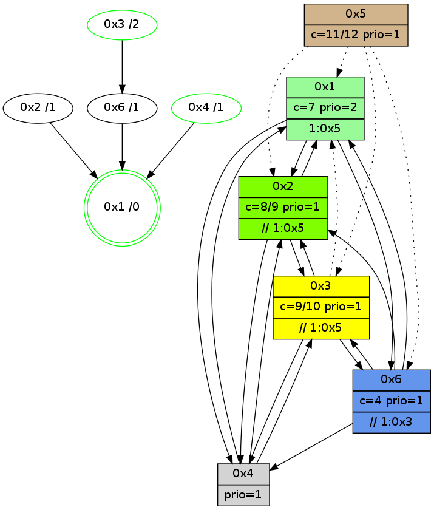

>> << IDX [start] -100 -25 -5 +0 +5 +25 +100 [935.15517211]
 Previous packets
----------------------------------------------------------------------
930.234093 beacon01(adaf) #0 coord=01,02,05,03,04,06 cycle=432.0ms assoc
-- color-indic=1 64 b6 4a
930.244053 beacon02(adaf) #0 coord=01,02,05,03,04,06 cycle=432.0ms assoc 64 e7 b5
930.254054 beacon05(adaf) #0 coord=01,02,05,03,04,06 cycle=432.0ms assoc 64 41 9f
930.264054 beacon03(adaf) #0 coord=01,02,05,03,04,06 cycle=432.0ms assoc 64 dd bb
930.274056 beacon04(adaf) #0 coord=01,02,05,03,04,06 cycle=432.0ms assoc 64 7b 91
930.284055 beacon06(adaf) #0 coord=01,02,05,03,04,06 cycle=432.0ms assoc 64 0f 8d
930.295599 [STC(3)->6-.->1 #0.118 new-neigh,tree-change,inconsistent-stability,to-color d=2]
930.299452 [Hello(2): seq=1224 sym=3,6,1 sysInfo=hasWarning stat=3:0,0,0,0/6:0,0,1,0/1:8,8,11,0]
930.301828 [Color(4) seq=90 @0:0 prio=1 c=7;1,4,6,8,9]
----------------------------------------------------------------------
930.726202 beacon01(adaf) #0 coord=01,02,05,03,04,06 cycle=432.0ms assoc
-- color-indic=1 64 72 25
930.736163 beacon02(adaf) #0 coord=01,02,05,03,04,06 cycle=432.0ms assoc 64 23 da
930.746162 beacon05(adaf) #0 coord=01,02,05,03,04,06 cycle=432.0ms assoc 64 85 f0
930.756165 beacon03(adaf) #0 coord=01,02,05,03,04,06 cycle=432.0ms assoc 64 19 d4
930.766163 beacon04(adaf) #0 coord=01,02,05,03,04,06 cycle=432.0ms assoc 64 bf fe
930.776164 beacon06(adaf) #0 coord=01,02,05,03,04,06 cycle=432.0ms assoc 64 cb e2
930.787886 [Hello(3): seq=734 sym=6,4,2 asym=1 sysInfo=hasWarning stat=6:8,11,0,2/4:9,8,5,0/2:5,5,2,0/1:12,10,11,1]
930.791593 [Hello(4): seq=736 sym=1,6,3 asym=2 sysInfo=hasWarning stat=1:5,4,3,0/6:7,0,3,0/3:6,2,10,4/2:2,6,1,0]
930.794003 [Color(2) seq=134 @0:0 color=8/9 prio=1 >>1.@5 c=4,7,9;0,1,2,5,6,a]
930.795973 [Color(1) seq=162 @0:0 color=7 prio=2 >1.@5 c=1,4,6,8,9;0,2,3,5,a]
----------------------------------------------------------------------
931.218309 beacon01(adaf) #0 coord=01,02,05,03,04,06 cycle=432.0ms assoc
-- color-indic=1 64 fc 30
931.228271 beacon02(adaf) #0 coord=01,02,05,03,04,06 cycle=432.0ms assoc 64 ad cf
931.238270 beacon05(adaf) #0 coord=01,02,05,03,04,06 cycle=432.0ms assoc 64 0b e5
931.248271 beacon03(adaf) #0 coord=01,02,05,03,04,06 cycle=432.0ms assoc 64 97 c1
931.258270 beacon04(adaf) #0 coord=01,02,05,03,04,06 cycle=432.0ms assoc 64 31 eb
931.268271 beacon06(adaf) #0 coord=01,02,05,03,04,06 cycle=432.0ms assoc 64 45 f7
931.279144 [Hello(1): seq=636 sym=2,4,6 sysInfo=hasWarning,coloring-mode-on,ColoringModeRequestCalled stat=2:12,4,8,2/4:2,4,2,0/6:8,0,6,1]
931.281676 [Color(4) seq=91 @0:0 prio=1 c=7;1,4,6,8,9]
931.283663 [Hello(2): seq=1225 sym=3,6,1 sysInfo=hasWarning stat=3:0,0,0,0/6:0,0,1,0/1:8,9,11,0]
----------------------------------------------------------------------
931.710417 beacon01(adaf) #0 coord=01,02,05,03,04,06 cycle=432.0ms assoc
-- color-indic=1 64 38 5f
931.720377 beacon02(adaf) #0 coord=01,02,05,03,04,06 cycle=432.0ms assoc 64 69 a0
931.730378 beacon05(adaf) #0 coord=01,02,05,03,04,06 cycle=432.0ms assoc 64 cf 8a
931.740379 beacon03(adaf) #0 coord=01,02,05,03,04,06 cycle=432.0ms assoc 64 53 ae
931.750378 beacon04(adaf) #0 coord=01,02,05,03,04,06 cycle=432.0ms assoc 64 f5 84
931.760378 beacon06(adaf) #0 coord=01,02,05,03,04,06 cycle=432.0ms assoc 64 81 98
931.772107 [Hello(3): seq=735 sym=6,4,2 asym=1 sysInfo=hasWarning stat=6:8,11,0,2/4:10,9,5,0/2:6,6,2,0/1:13,11,11,1]
931.774892 [STC(1) #0.119 new-neigh,tree-change,inconsistent-stability,stable,to-color d=0]
931.776468 [Color(2) seq=135 @0:0 color=8/9 prio=1 >>1.@5 c=4,7,9;0,1,2,5,6,a]
931.781202 [Hello(4): seq=737 sym=1,6,3 asym=2 sysInfo=hasWarning stat=1:6,5,3,0/6:7,0,3,0/3:6,2,10,4/2:3,7,1,0]
931.789592 [Color(1) seq=163 @0:0 color=7 prio=2 >1.@5 c=1,4,6,8,9;0,2,3,5,a]
----------------------------------------------------------------------
932.202525 beacon01(adaf) #0 coord=01,02,05,03,04,06 cycle=432.0ms assoc
-- color-indic=1 64 74 ef
932.212487 beacon02(adaf) #0 coord=01,02,05,03,04,06 cycle=432.0ms assoc 64 25 10
932.222486 beacon05(adaf) #0 coord=01,02,05,03,04,06 cycle=432.0ms assoc 64 83 3a
932.232486 beacon03(adaf) #0 coord=01,02,05,03,04,06 cycle=432.0ms assoc 64 1f 1e
932.242487 beacon04(adaf) #0 coord=01,02,05,03,04,06 cycle=432.0ms assoc 64 b9 34
932.252487 beacon06(adaf) #0 coord=01,02,05,03,04,06 cycle=432.0ms assoc 64 cd 28
932.264024 [STC(6)->1 #0.119 new-neigh,tree-change,inconsistent-stability,to-color d=1]
932.267895 [Hello(2): seq=1226 sym=3,6,1,4 sysInfo=hasWarning stat=3:0,0,0,0/6:0,0,1,0/1:8,10,11,0/4:0,0,0,0]
932.270257 [Color(4) seq=92 @0:0 prio=1 c=7;1,4,6,8,9]
932.274188 [Hello(1): seq=637 sym=2,4,6 sysInfo=hasWarning,coloring-mode-on,ColoringModeRequestCalled stat=2:13,4,8,2/4:2,5,2,0/6:9,0,6,1]
----------------------------------------------------------------------
932.694633 beacon01(adaf) #0 coord=01,02,05,03,04,06 cycle=432.0ms assoc
-- color-indic=1 64 b0 80
932.704594 beacon02(adaf) #0 coord=01,02,05,03,04,06 cycle=432.0ms assoc 64 e1 7f
932.714593 beacon05(adaf) #0 coord=01,02,05,03,04,06 cycle=432.0ms assoc 64 47 55
932.724594 beacon03(adaf) #0 coord=01,02,05,03,04,06 cycle=432.0ms assoc 64 db 71
932.734594 beacon04(adaf) #0 coord=01,02,05,03,04,06 cycle=432.0ms assoc 64 7d 5b
932.744594 beacon06(adaf) #0 coord=01,02,05,03,04,06 cycle=432.0ms assoc 64 09 47
932.756363 [Hello(4): seq=738 sym=1,6,3 asym=2 sysInfo=hasWarning stat=1:7,6,3,0/6:7,0,3,0/3:6,2,10,4/2:3,7,1,0]
932.760510 [Hello(3): seq=736 sym=6,4,2 asym=1 sysInfo=hasWarning stat=6:8,11,1,2/4:11,10,5,0/2:7,7,2,0/1:14,12,12,1]
932.762418 [Color(2) seq=136 @0:0 color=8/9 prio=1 >>1.@5 c=4,7,9;0,1,2,5,6,a]
932.764078 [Color(1) seq=164 @0:0 color=7 prio=2 >1.@5 c=1,4,6,8,9;0,2,3,5,a]
932.768016 [STC(3)->6-.->1 #0.119 new-neigh,tree-change,inconsistent-stability,stable,to-color d=2]
932.770291 [TreeStatus(3)-.->1 #0.119 new-neigh,tree-change,inconsistent-stability,stable child=1]
----------------------------------------------------------------------
933.186741 beacon01(adaf) #0 coord=01,02,05,03,04,06 cycle=432.0ms assoc
-- color-indic=1 64 fd 87
933.196702 beacon02(adaf) #0 coord=01,02,05,03,04,06 cycle=432.0ms assoc 64 ac 78
933.206702 beacon05(adaf) #0 coord=01,02,05,03,04,06 cycle=432.0ms assoc 64 0a 52
933.216702 beacon03(adaf) #0 coord=01,02,05,03,04,06 cycle=432.0ms assoc 64 96 76
933.226703 beacon04(adaf) #0 coord=01,02,05,03,04,06 cycle=432.0ms assoc 64 30 5c
933.236703 beacon06(adaf) #0 coord=01,02,05,03,04,06 cycle=432.0ms assoc 64 44 40
933.247866 [Hello(1): seq=638 sym=2,4,6 sysInfo=hasWarning,coloring-mode-on,ColoringModeRequestCalled stat=2:13,4,8,2/4:2,5,2,0/6:9,0,6,1]
933.250409 [Color(4) seq=93 @0:0 prio=1 c=7;1,4,6,8,9]
933.252161 [Hello(2): seq=1227 sym=1,4 sysInfo=hasWarning stat=1:9,11,11,0/4:0,1,0,0]
----------------------------------------------------------------------
933.678848 beacon01(adaf) #0 coord=01,02,05,03,04,06 cycle=432.0ms assoc
-- color-indic=1 64 39 e8
933.688808 beacon02(adaf) #0 coord=01,02,05,03,04,06 cycle=432.0ms assoc 64 68 17
933.698809 beacon05(adaf) #0 coord=01,02,05,03,04,06 cycle=432.0ms assoc 64 ce 3d
933.708809 beacon03(adaf) #0 coord=01,02,05,03,04,06 cycle=432.0ms assoc 64 52 19
933.718810 beacon04(adaf) #0 coord=01,02,05,03,04,06 cycle=432.0ms assoc 64 f4 33
933.728810 beacon06(adaf) #0 coord=01,02,05,03,04,06 cycle=432.0ms assoc 64 80 2f
933.740500 [Hello(6): seq=652 sym=4,2,1,3 sysInfo=hasWarning stat=4:6,8,2,0/2:13,11,6,1/1:0,14,2,1/3:5,4,12,2]
933.742891 [Color(1) seq=165 @0:0 color=7 prio=2 >1.@5 c=1,4,6,8,9;0,2,3,5,a]
933.744487 [Hello(4): seq=739 sym=2,1,6,3 sysInfo=hasWarning stat=2:4,8,1,0/1:8,7,3,0/6:7,0,3,0/3:6,2,11,5]
933.746645 [Color(2) seq=137 @0:0 color=8/9 prio=1 >>1.@5 c=4,7,9;0,1,2,5,6,a]
933.748251 [TreeStatus(4)-.->1 #0.118 new-neigh,tree-change,inconsistent-stability,stable child=1]
933.749632 [Hello(3): seq=737 sym=6,4,2 asym=1 sysInfo=hasWarning stat=6:8,11,1,2/4:11,11,5,0/2:8,7,2,0/1:15,12,12,1]
----------------------------------------------------------------------
934.170955 beacon01(adaf) #0 coord=01,02,05,03,04,06 cycle=432.0ms assoc
-- color-indic=1 64 75 58
934.180916 beacon02(adaf) #0 coord=01,02,05,03,04,06 cycle=432.0ms assoc 64 24 a7
934.190915 beacon05(adaf) #0 coord=01,02,05,03,04,06 cycle=432.0ms assoc 64 82 8d
934.200916 beacon03(adaf) #0 coord=01,02,05,03,04,06 cycle=432.0ms assoc 64 1e a9
934.210918 beacon04(adaf) #0 coord=01,02,05,03,04,06 cycle=432.0ms assoc 64 b8 83
934.220918 beacon06(adaf) #0 coord=01,02,05,03,04,06 cycle=432.0ms assoc 64 cc 9f
934.232665 [Hello(2): seq=1228 sym=3,1,4 sysInfo=hasWarning stat=3:0,0,0,0/1:9,11,11,0/4:0,1,0,1]
934.235074 [Hello(1): seq=639 sym=2,4,6 sysInfo=hasWarning,coloring-mode-on,ColoringModeRequestCalled stat=2:14,5,8,2/4:3,6,2,1/6:9,0,6,1]
934.236960 [Color(4) seq=94 @0:0 prio=1 c=7;1,4,6,8,9]
934.238851 [STC(1) #0.120 new-neigh,tree-change,inconsistent-stability,stable,to-color d=0]
----------------------------------------------------------------------
934.663065 beacon01(adaf) #0 coord=01,02,05,03,04,06 cycle=432.0ms assoc
-- color-indic=1 64 b1 37
934.673025 beacon02(adaf) #0 coord=01,02,05,03,04,06 cycle=432.0ms assoc 64 e0 c8
934.683028 beacon05(adaf) #0 coord=01,02,05,03,04,06 cycle=432.0ms assoc 64 46 e2
934.693028 beacon03(adaf) #0 coord=01,02,05,03,04,06 cycle=432.0ms assoc 64 da c6
934.703027 beacon04(adaf) #0 coord=01,02,05,03,04,06 cycle=432.0ms assoc 64 7c ec
934.713028 beacon06(adaf) #0 coord=01,02,05,03,04,06 cycle=432.0ms assoc 64 08 f0
934.724564 [STC(2)->1 #0.120 to-color d=1]
934.727580 [Color(1) seq=166 @0:0 color=7 prio=2 >1.@5 c=1,4,6,8,9;0,2,3,5,a]
934.730191 [Hello(3): seq=738 sym=6,4,2 asym=1 sysInfo=hasWarning stat=6:8,11,1,2/4:11,11,5,0/2:8,7,2,0/1:15,12,13,1]
934.734000 [Hello(6): seq=653 sym=4,2,1,3 sysInfo=hasWarning stat=4:7,8,2,1/2:14,12,6,1/1:1,15,3,1/3:6,5,12,2]
934.736840 [STC(6)->1 #0.120 new-neigh,tree-change,inconsistent-stability,to-color d=1]
934.740009 [Hello(4): seq=740 sym=2,1,3 sysInfo=hasWarning stat=2:4,8,1,0/1:8,7,4,0/3:7,2,11,5]
934.742709 [STC(4)->1 #0.120 new-neigh,tree-change,inconsistent-stability,stable,to-color d=1]